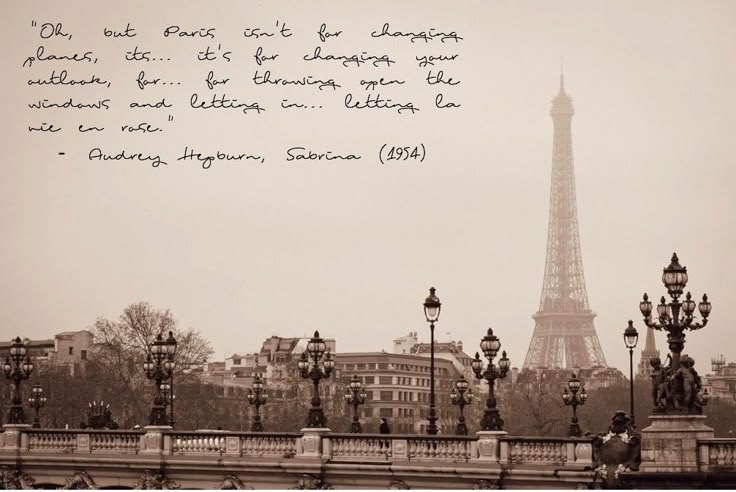
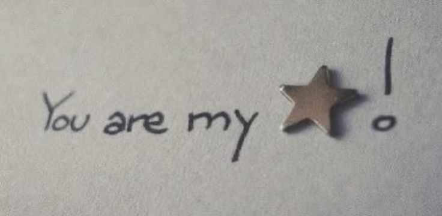

Every day that passes with you feels like a gift I never expected but now can’t live without. It’s crazy how in just a month, you’ve become such a big part of my world — someone I think about when I wake up, and someone I want to share my dreams with when I fall asleep.
This one year anniversary isn’t just a number to me — it’s a symbol of how far we’ve come and how much I’m willing to keep going. I’m grateful for every smile, every late night chat, every silly joke, and even the moments when we just sit quietly and feel connected without saying a word.
I don’t know what the future holds, but I do know that with you, I’m ready to face anything. Thanks for being patient, kind, and real — and for making me believe that love like this is possible. Here’s to us, to this beautiful beginning, and to the many months and years we’ll create together.
Let’s keep making memories that make our hearts fuller than yesterday.